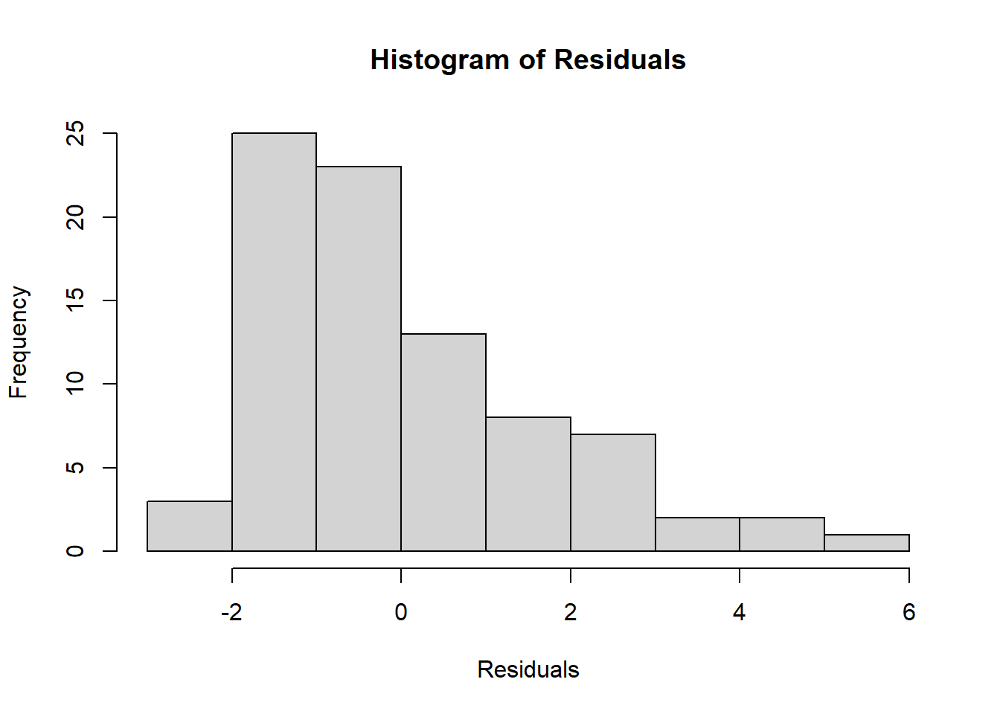
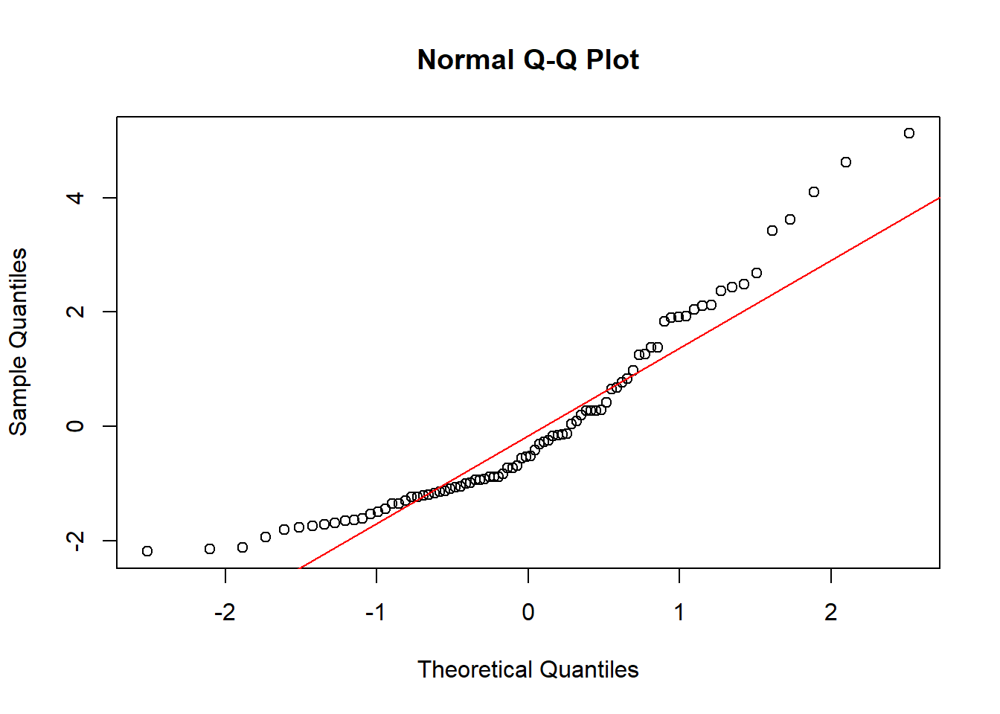

Bab 3 Penggunaan Least Square
Inilah model yang paling sederhana dalam time series. Model ini mengubungkan satuan tahun sebagai variabel X dan juga variabel Y adalah data tersebut sebagai variabel dari data tersebut. Untuk mengitungnya dengan terlebih dahulu merubah data dalam bentuk tahunan dengan data awalan yakni angka 0 sebagai data awalan atau awalan dari perkiraan. Data waktu digunakan seolah seperti data variabel independen yang mempengaruhi data tersebut. Kita percaya kalau waktu itu yang merubah data apakah akan meningkat atau akan menurun data tersebut. Hasil data tersebut akan diolah dengan hitungan manual maupun dengan hitungan software seperti microsoft Excel atau juga RStudio. Adapun langkah tersebut adalah seperti : Mengumpulkan data time series baik dalam sequence hari, minggi, bulan, tahun atau yang lebih lama lagi. Seperti dijelaskan dalam Teorema 3.1, …
# Teorema Block dalam Least SquaresTheorem 3.1 Misalkan \(A\) adalah matriks \(m \times n\), yang dapat dibagi menjadi blok sebagai berikut: \[ A = \begin{bmatrix} A_1 \\ A_2 \end{bmatrix}, \] di mana \(A_1\) adalah matriks \(m_1 \times n\) dan \(A_2\) adalah matriks \(m_2 \times n\) dengan \(m_1 + m_2 = m\).
Jika \(\mathbf{b}\) adalah vektor yang juga dapat dibagi menjadi dua blok: \[ \mathbf{b} = \begin{bmatrix} \mathbf{b}_1 \\ \mathbf{b}_2 \end{bmatrix}, \] maka solusi least squares dari \(\min_{\mathbf{x}} \| A\mathbf{x} - \mathbf{b} \|_2^2\) dapat dihitung secara blok dengan memisahkan \(A\) dan \(\mathbf{b}\) menjadi bagian-bagian yang sesuai.
Teorema ini menyatakan bahwa: \[ \mathbf{x} = (A^\top A)^{-1} A^\top \mathbf{b}, \] dapat dihitung menggunakan blok \(A_1\), \(A_2\), \(\mathbf{b}_1\), dan \(\mathbf{b}_2\) secara independen jika matriks \(A\) memenuhi sifat tertentu, seperti ketidakdegenerasian.
Penjelasan Teorema ini berguna untuk mempercepat komputasi least squares dalam kasus matriks besar yang dapat dipecah menjadi beberapa bagian.
Pengkodean dari data tersebut. Untuk pengkodean seperti ini kita bisa memulai dengan angka awal sebagai angka 0 tersebut. Cara lain adalah dengan cara memberikan angka 0 pada waktu di tengah daripada jumlah data tersebut. Ini berlaku pada yang ganjil saja kalau di waktu tengah ada yang waktu ganjil misalnya jka jumlah data 7 maka nilai yang menjadi angka 0 adalah yang ditengah. Apapun kode ini boleh selama hal itu adalah konsisten. Dalam soal maka kita bisa menunjukkan nilai tersebut. Banyak yang harus kau perhatikan dlama penggunaan peramalan seperti ini. Setidaknya d masalah dalam autokorelasi dalam peramalan dengan least suqare seperti ini. Ini terjadi autokorelasi yang terjadi. Pada data time series data yang satu mempunyai hubungan dengan yang lainnya ? (mungkinkah hal ini akan terjadi dengan autokorelasi tersebut.
Dalam upaya untuk meramal dengan metode least square. kita akan menggunakan data set daripada rstudio yang bernama JOhnsonJOhnson. Dari sini akan kita meregresi dengan waktunya . Jadi waktu itu berkedudukan sebagai variabel X atau variabel bebasnya. kemudian langkah lagi Zhan (2020)
# Menambahkan kolom waktu sebagai prediktor
datajj <- data.frame(
time = time(JohnsonJohnson),
y = as.numeric(JohnsonJohnson)
)
# Model regresi linear
modellm <- lm(y ~ time, data = datajj)
summary(modellm) # Menampilkan hasil regresi##
## Call:
## lm(formula = y ~ time, data = datajj)
##
## Residuals:
## Min 1Q Median 3Q Max
## -2.1853 -1.1968 -0.5239 0.8742 5.1229
##
## Coefficients:
## Estimate Std. Error t value Pr(>|t|)
## (Intercept) -1.280e+03 5.926e+01 -21.61 <2e-16 ***
## time 6.522e-01 3.007e-02 21.69 <2e-16 ***
## ---
## Signif. codes:
## 0 '***' 0.001 '**' 0.01 '*' 0.05 '.' 0.1 ' ' 1
##
## Residual standard error: 1.671 on 82 degrees of freedom
## Multiple R-squared: 0.8515, Adjusted R-squared: 0.8497
## F-statistic: 470.3 on 1 and 82 DF, p-value: < 2.2e-16Dalam least square kita akan memperhatikan beberapa asumsi yakni kemungkinannya ada uji durbin watson yang menunjukkan dari model tersebut. Adanya hubungan ini akan mendpaatkan kemungkinan bias dalam bentuk peramalan
Solusi adalah melakukan differencing di data yang sudah ada. Biasanya penggunaan differencing satu kali sudah bisa mengatasi masalah autokorelasi.
## Warning: package 'lmtest' was built under R version
## 4.3.1##
## Durbin-Watson test
##
## data: modellm
## DW = 0.72734, p-value = 7.452e-12
## alternative hypothesis: true autocorrelation is greater than 0Nilai terlalu rendah maka nlai 0,80058 tersebut masih jauh dibawah nilai 2. Biasanya nilai dua itu sudah cukup bagus untuk autokorelasi.
3.1 Autokorelasi
Seperti diatas kita melihat adanya kemungkinan terjadinya autkorelasi pada data time series kemungkinan besar. Banyak data dari Time series yang mempunyai pola gangguan seperti ini. Pola data yang berhubungan tersebut karena sifat data yang berkala dan berderet seperti mmepunyai pola tertentu yang akan berulang suatu saat lagi. Setelah kita mempelajari adanya autokorelasi maka kita mengecek apakah regresi akan juga mmebuat atau berbeda dengan apa yang kita lakukan. Beberapa data akan selesai dengan least square tapi lebih banyak dari data itu akan membuat suatu peramalan yang lebih tepat. Salah satunya adalah dengan menggunakan autokorelasi tersebut. Dengan demikian kita bisa untuk mendapatkan suatu rediksi yang lebih tepat.
Adapun autoregresi adalah salah satu upaya dengan meregresikan beberapa data dengan satu periode sebelumnya(?). Kalau kita bisa membuat seperti ini maka kita bisa untuk membuat model ini. Tentu kita tidak bisa menenbak semua hal yang dapat kita gunakan untuk regresi ini. Hanya beberapa pilihan yang dapat kita lakukan untuk itu.
Dalam pemanfaatan ramalan kita juga dapat menjelaskan ada lag atau jeda waktu yang ada. Ketika anda sosialisasi suatu peraturan apakah semua orang langsung menuruti atau memathuhi peraturan tersebut. Tentu tidak penetapam atau pemberlakukan peraturan akan terjadi jika kalau kita sudah melalaui sosialisasi. Ada beberapa alasan atau reason dengan yang terjadi dengan hal ini: seperti Masalah psikologi karena penerpan sesuatu mungkin akan membuthan waktu untuk penerapan. Ketika kita menginginkan sesuatu apakah langsung datang apa yang kita mau. Tentu tidak akan selalu demikian. kita dulu menunggu waktu yang tepat untuk membuat terlebih dahulu agar kita bisa untuk mengetahui sinyal yang akan datang.
3.2 Heterokedatisitas
karena least quare dlah model seperti regresi maka harus melwwati seperti asumsi error yang jumlahnya nol maka kita bisa memeriksanya dengan bptest
##
## studentized Breusch-Pagan test
##
## data: modellm
## BP = 8.5501, df = 1, p-value = 0.003455Nilai dari bptest juga menunjukkan tidak menggembirakan karena nilanya lebih rendah dari lima persen atau 0,05 (p<0,05) maka bisa disimpulkan model least square tidak cocok untuk data ini.
Kemudian kita bisa menguji test normalitas dengan seperti dibawah ini.


##
## Shapiro-Wilk normality test
##
## data: modellm$residuals
## W = 0.90238, p-value = 9.889e-06Hasilnya juga tidak menggembirakan juga karena dalam uji ini juga menunjukkan tidak ada yang dapat menerima normalitas dari residual data.
Pertanyaan
Apakah autokorelasi disebut sebagai korelasi terhadap dirinya sendiri?
Mengapa Autokorelasi itu harus dihilangkan?